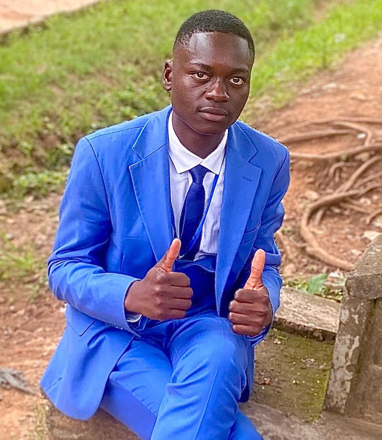

Bonjour je m'appele charis Kalenda et je suis Etudiant dynamique et motivé en informatque à UDBL . passionné par Le developpement web,l'intelligence artificielle,et le design graphique,je suis constamment à la recherche de nouvelles opportunités d'apprentissage et de défis stimulants.
Au cours de mes études ,j'ai développé de solides compétences en programmation . Je suis une personne rigoureuse ,créative et j'aime travailler en equipe pour atteindre des objectifs communs. Mon objectif est de contribuer à des projets innovants,trouver un stage ,et maitriser le Framework Laravel .
| CATEGORIE | COMPETENCE | NIVEAU |
|---|---|---|
| programmation | HTML,CSS,Javascript,python | Avancé |
| Design | Figma,Photoshop(base) | Intermédiaire |
| Langues | Français(natif),Anglais(fluide) | Avancé |
| outils | Git,Vs code,suite office | Avancé |
| soft skills | communicationn,résolution des problèmes | expert |